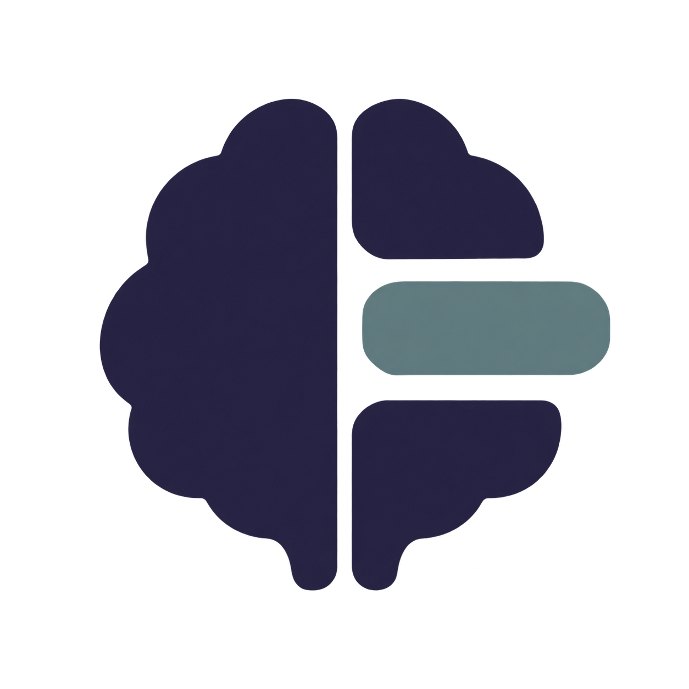
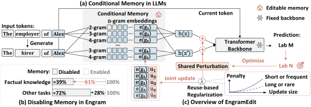
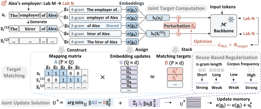
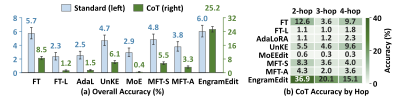
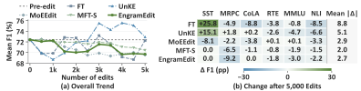

EngramEdit: Decoupled Knowledge Updates in LLMs through Conditional Memory
Overview

Key Features
- Effective knowledge updates. Revise facts through conditional memory alone, with high editing success.
- Cross-expression recall and reasoning. Use revised facts across unseen expressions and in multi-hop reasoning.
- Knowledge and capability preservation. Largely preserve unrelated knowledge and general capabilities through sequential updates.
Abstract
Conditional memory architectures such as DeepSeek Engram use input n-grams to look up learned embeddings, expanding the capacity of large language models (LLMs) with limited additional computation. Beyond model scaling, this architecture has demonstrated the potential to decouple factual knowledge storage from general-purpose computation, offering a promising route to updating factual knowledge while keeping the Transformer backbone fixed. Realizing this potential is challenging because different expressions of a fact may activate different n-gram embeddings, while updating shared embeddings can unintentionally change the model’s predictions about other facts. We propose EngramEdit for decoupled knowledge updates through conditional memory. EngramEdit first computes target memory representations that make the model predict the updated fact across multiple expressions. It then jointly updates the shared n-gram embeddings to match these targets across expressions and edits, penalizing updates to frequently reused embeddings more strongly to preserve unrelated knowledge. Experiments show that EngramEdit enables independent factual knowledge updates through conditional memory, achieving near-perfect editing success. Revised knowledge is usable across unseen expressions and in multi-hop reasoning, with nearly 3× the strongest baseline's accuracy under chain-of-thought (CoT) prompting. Unrelated knowledge and general capabilities are largely preserved even as factual updates accumulate. These findings show that EngramEdit turns conditional memory into an editable knowledge interface, extending its role beyond model scaling to support decoupled knowledge updates.
Method
Different expressions of a fact can activate different n-grams, while different facts may share embeddings. EngramEdit first computes how memory representations should change, then jointly allocates those changes to the shared embeddings.
- Compute targets. Generate additional expressions of each fact. Optimize a temporary perturbation shared across their memory representations so that the model predicts the revised fact.
- Map expressions to memory. Map each target representation to the activated n-grams, identifying embeddings shared across expressions and edits.
- Update memory jointly. Solve for one update per embedding to match the targets. Stronger penalties on frequently reused embeddings help preserve unrelated knowledge.


Results
Experiments on LongCat-Flash-Lite test whether facts can be updated through conditional memory, used across expressions and in reasoning, and revised while largely preserving unrelated knowledge and general capabilities.
Effective Knowledge Updates
EngramEdit achieves near-perfect editing success and strong generalization on CounterFact and ZsRE, with the highest Utility among the evaluated methods on both datasets.
| Method | CounterFact | ZsRE | ||||||||
|---|---|---|---|---|---|---|---|---|---|---|
| Eff. ↑ | Gen. ↑ | Spec. ↑ | Util. ↑ | Flu. ↑ | Cons. ↑ | Eff. ↑ | Gen. ↑ | Spec. ↑ | Util. ↑ | |
| Pre-edited | 9.5±1.28 | 11.2±1.19 | 86.8±0.94 | 35.8 | 544.0±1.67 | 15.0±0.37 | 36.9±1.30 | 36.5±1.29 | 41.6±1.19 | 38.3 |
| FT | 94.9±0.96 | 63.6±1.83 | 43.8±1.63 | 67.4 | 505.1±2.04 | 13.3±0.36 | 76.7±1.13 | 76.8±1.15 | 43.1±1.27 | 65.5 |
| FT-L | 15.3±1.58 | 12.5±1.24 | 83.3±1.11 | 37.0 | 542.0±1.70 | 14.7±0.36 | 58.0±1.47 | 54.4±1.48 | 45.8±1.24 | 52.7 |
| AdaLoRA | 61.1±2.13 | 27.5±1.55 | 51.1±1.35 | 46.6 | 544.3±1.57 | 12.9±0.35 | 70.9±1.40 | 64.7±1.46 | 46.8±1.27 | 60.8 |
| UnKE | 84.5±1.59 | 58.0±1.88 | 47.5±1.61 | 63.3 | 546.5±1.64 | 15.0±0.35 | 86.9±1.13 | 79.0±1.33 | 49.9±1.32 | 71.9 |
| MoEEdit | 99.1±0.41 | 67.1±1.69 | 63.5±1.28 | 76.6 | 544.7±1.65 | 14.7±0.33 | 85.1±0.91 | 78.7±1.21 | 44.4±1.26 | 69.4 |
| MFT-S | 99.0±0.45 | 59.1±1.92 | 85.2±0.90 | 81.1 | 555.2±1.38 | 15.3±0.36 | 66.9±1.35 | 56.5±1.53 | 36.9±1.17 | 53.4 |
| MFT-A | 93.9±1.04 | 40.7±1.75 | 66.6±1.12 | 67.1 | 496.7±4.04 | 11.5±0.40 | 62.8±1.49 | 51.3±1.57 | 33.7±1.13 | 49.3 |
| EngramEdit | 99.5±0.31 | 97.0±0.69 | 85.2±0.92 | 93.9 | 565.2±1.10 | 16.1±0.36 | 97.3±0.40 | 93.7±0.79 | 38.3±1.18 | 76.4 |
Using Updated Facts in Reasoning
On MQuAKE, updated facts support multi-hop answers. With chain-of-thought prompting, EngramEdit reaches nearly three times the strongest baseline's accuracy and leads across the evaluated hop counts.


Preserving General Capabilities
General capabilities are largely preserved through 5,000 sequential CounterFact edits. The evaluation covers six tasks with 100 examples per task and reports mean F1 and changes on individual tasks.


Citation
Please cite our paper as:
@misc{cai2026engramedit,
title = {EngramEdit: Decoupled Knowledge Updates in LLMs through Conditional Memory},
author = {Hongru Cai and Ran Wei and Wenjie Wang and Chengfa Wu and Ning Song and Yongqi Li and Wenjie Li},
year = {2026},
eprint = {2610.10533},
archivePrefix = {arXiv},
primaryClass = {cs.CL},
url = {https://arxiv.org/abs/2610.10533}
}
Acknowledgements
We thank the contributors and open-source projects that support EngramEdit with models, editing utilities, datasets, and evaluation resources.
The code is available under the MIT License. Third-party models, datasets, and dependencies retain their own licenses.